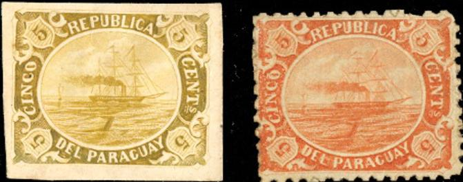
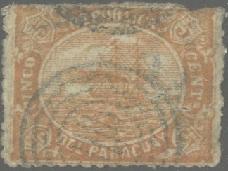
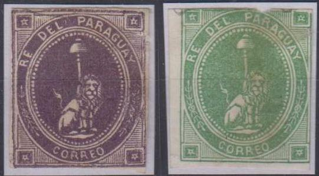

Most likely the original bogus issue
Return To Catalogue - Paraguay
Note: on my website many of the
pictures can not be seen! They are of course present in the
catalogue;
contact me if you want to purchase the catalogue.
Inscription "REPUBLICA DEL PARAGUAY" ship in an ellipse, perforated or imperforated, this stamp was issued by the Boston gang: a group of persons who issued bogus stamps from exotic countries with leader Allan Taylor. There even seem to exist forgeries of these stamps, made by the Spiro brothers and others. Note the typical cancellation that can also be found on many forged stamps; 4 rings with 6 lines in the center (other cancels exist). These stamps were described as forgeries in 'The American Journal of Philately' May 1 1868 page 19 and Jan.20, 1869 pages 8-9 (together with a bogus issue of Ecuador).

Most likely the original bogus issue

Forgeries of the bogus issue. The design is much more coarse.
(Reduced view)

Yet another forgery type, not the different side inscriptions,
such as "CINCO" and the smoke pattern.
Another bogus issue (or unissued proof?), sitting lion, inscription "RE DEL PARAGUAY CORREO":

Type with front legs separated at the joints. An image closely
resembling this design appeared in The Stamp Collectors Magazine
of Nov. 1, 1869, page 171, where an employee of the Buenos Aires
post office (F.P. Hansen) recalls how he found this when
Argentine troups had raided Paraguay during the Paraguay
Argentine Republic war of 1865. He says he included an impression
of this stamp. The above might therefore be the original design?


This type was probably made by Spiro.


(Reduced views)

Here with a bogus "PNo" cancel that I have also seen on
a forgery of the first issue of Persia and a forgery from
Uruguay.


Type with very small lion.
These stamps were actually essays made in 1862 for the president of Paraguay, General Lopez. However, the die fell in wrong hands and large numbers of 'reprints' in many colours were made by a printer in Buenos Aires. There are at least five types (note the shape of the hat,stars and the tail in the above stamps); possibly forgeries were made as well.

{kind=link}
{kind=link}
{kind=link}
{kind=link}